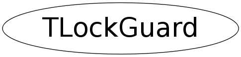

class TLockGuard
TVirtualMutex This class implements a mutex interface. The actual work is done via TMutex which is available as soon as the thread library is loaded. and TLockGuard This class provides mutex resource management in a guaranteed and exception safe way. Use like this: { TLockGuard guard(mutex); ... // do something } when guard goes out of scope the mutex is unlocked in the TLockGuard destructor. The exception mechanism takes care of calling the dtors of local objects so it is exception safe.
Function Members (Methods)
public:
| TLockGuard(TVirtualMutex* mutex) | |
| virtual | ~TLockGuard() |
| static TClass* | Class() |
| virtual TClass* | IsA() const |
| virtual void | ShowMembers(TMemberInspector& insp) |
| virtual void | Streamer(TBuffer& b) |
| void | StreamerNVirtual(TBuffer& b) |
private:
| TLockGuard(const TLockGuard&) | |
| TLockGuard& | operator=(const TLockGuard&) |
Data Members
private:
| TVirtualMutex* | fMutex |
Class Charts
{kind=link}
{kind=link}
{kind=link}
{kind=link}

Function documentation
TLockGuard(const TLockGuard& )
TLockGuard& operator=(const TLockGuard& )